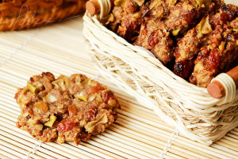

Рецепт швидкого дієтичного печива
Набридло їсти несмачні хлібці, але хочеться зберегти фігуру? Їх можна замінити легким вівсяним печивом домашнього приготування.
Компоненти

- Вівсяні пластівці – 200 г;
- Масло рослинне – 3 ст. л.;
- Цукор – 3 ст. л.;
- Яйця – 2 шт.;
- Молоко або кефір нежирний – 100 мл;
- Ванілін – на розсуд кулінара.
Заливаємо вівсяні пластівці теплим молоком або кефіром. Залишаємо розбухати на півгодини. Домішуємо яйця, масло рослинне і цукор.
Тісто виходить негустим, тому викладати його краще великою ложкою. У вівсяне тісто можна додати зерна льону або насіння гарбуза.
Випікати 15 хвилин при 185 °С.
Джерело рецепту:
http://dovidkam.com/kulinarni-recepty/domashnye-pechivo-recepti-prosti-i-shvidki-pokrokovo-z-foto.html